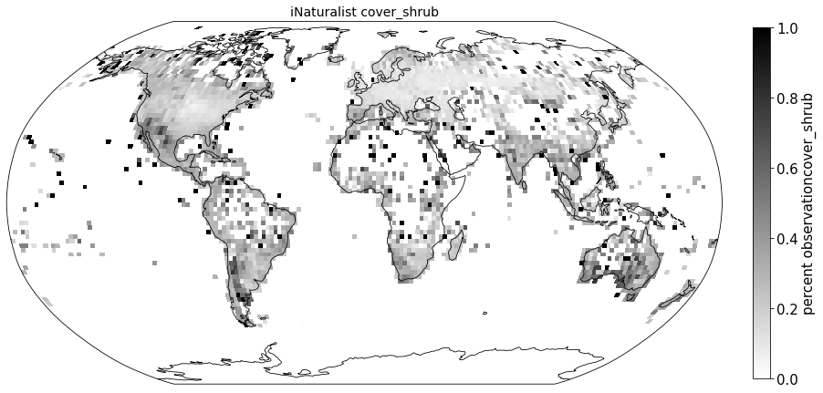
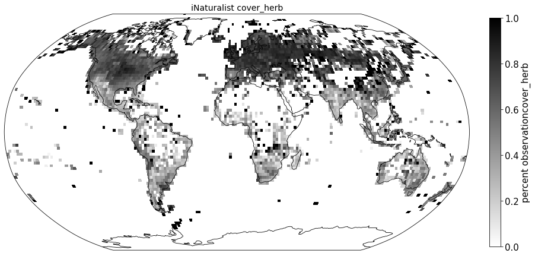
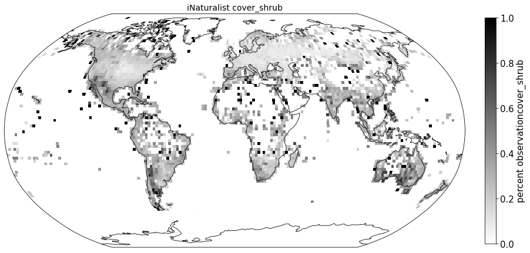
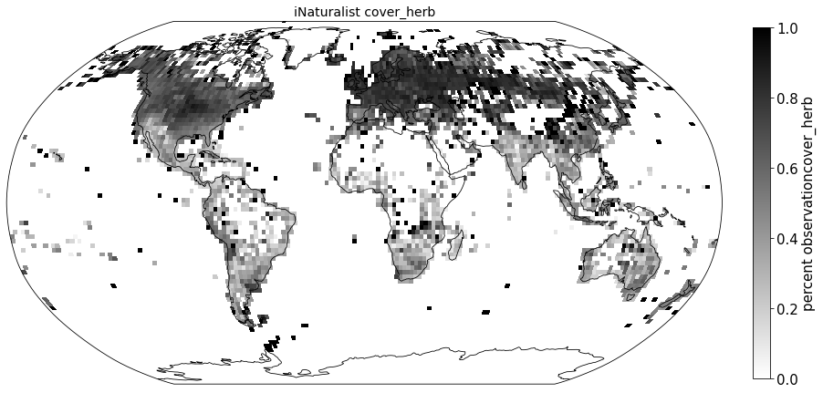
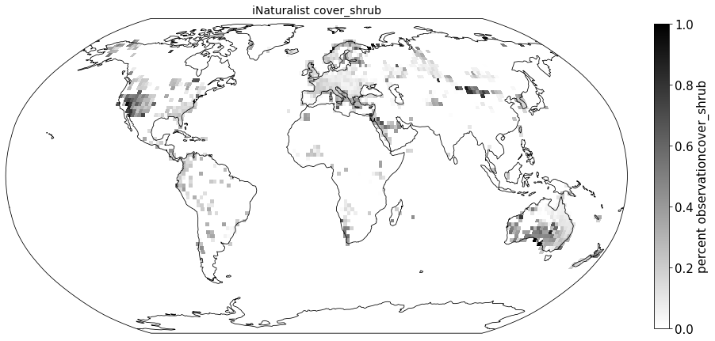
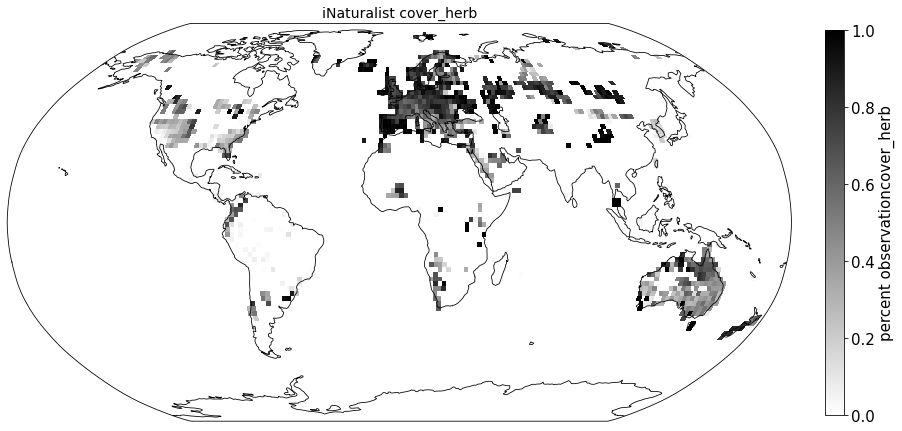
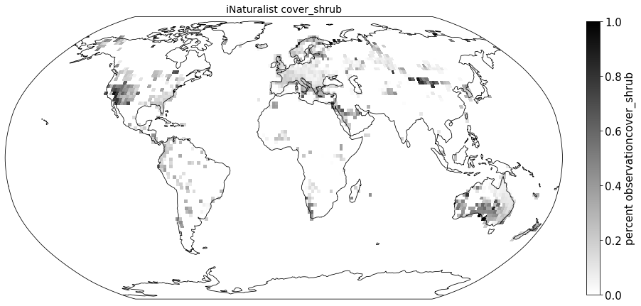
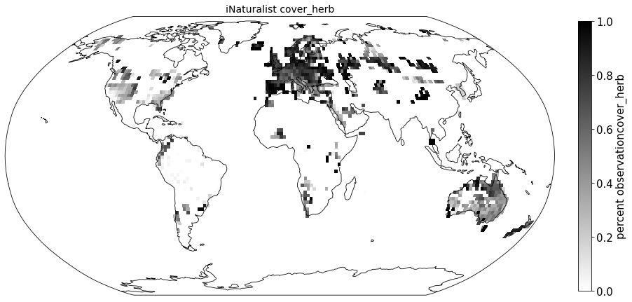
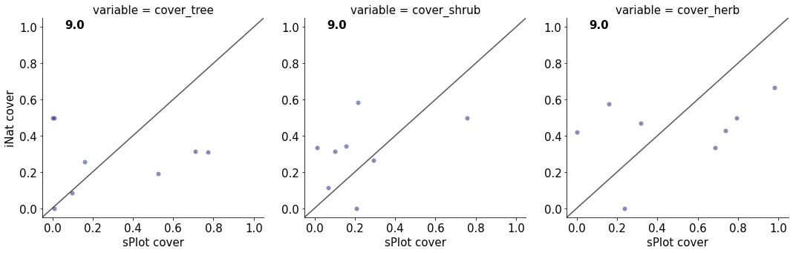
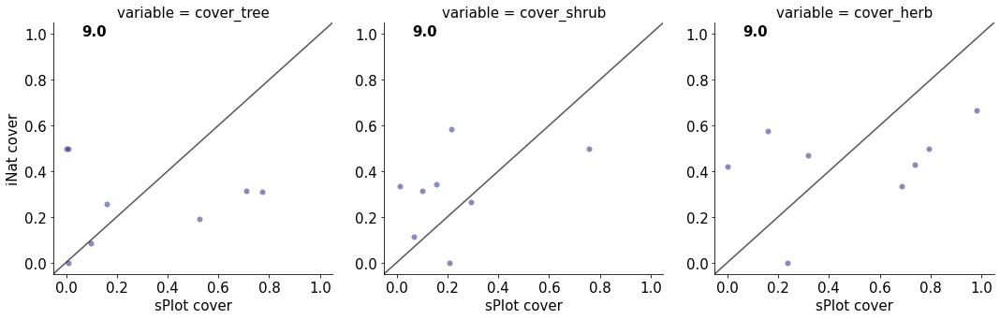

Growth forms coverage
Contents
Growth forms coverage#
We extracted growth form information (tree/shrub/herb) from TRY (Trait-ID 42) to each iNaturalist observation and estimated the coverage of each growth form for all sPlotOpen plots. We chose the most commonly used classification for each species. The average tree/shrub/herb coverage was then calculated for each grid cell and the these means correlated.
This section covers:
Link growth form information to iNaturalist observations
Calculate coverage
Plot coverage
Compare to sPlot life form coverage
# packages
import os
import pandas as pd
import numpy as np
from matplotlib import pyplot as plt
import seaborn as sns
import matplotlib.ticker as ticker
from matplotlib.colors import LogNorm, Normalize
from matplotlib.ticker import MaxNLocator
import cartopy.crs as ccrs
import cartopy.feature as cfeature
from matplotlib.colors import BoundaryNorm
Link growth form information to iNaturalist observations#
iNat = pd.read_csv("iNat_TRY_log.csv")
life_forms = pd.read_csv("TRY/Life_Forms/19233.txt", sep = "\t", encoding="iso-8859-1",
usecols = ["AccSpeciesName", "SpeciesName", "TraitID", "TraitName", "OrigValueStr"],
dtype={'TraitID': float})
growth_forms = life_forms[life_forms["TraitID"]==42.0]
growth_forms = growth_forms.dropna(subset=["OrigValueStr"])
Define the variations of growth form terms:
search_terms_tree = ["tree", "Tree", "TREE", "seedling", "hardwood", "softwood", "Hardwood", "Softwood"]
search_terms_herb = ["herb","Herb", "HERB","graminoid", "Graminoid","GRAMINOID", "Forb","forb",
"Grass","grass", "GRASS", "sedge","SEDGE", "fern", "Fern", "FERN"]
search_terms_shrub = ["shrub","Shrub", "SHRUB", "seedling","vine", "Vine", "VINE", "liana", "Liana", "LIANA"]
Add 1 for is_tree, is_shrub, and is_herb, 0 if not:
growth_forms['is_tree'] = (growth_forms["OrigValueStr"]=="T") | growth_forms['OrigValueStr'].str.contains('|'.join(search_terms_tree))
growth_forms['is_tree'] = growth_forms['is_tree'].astype(int)
growth_forms['is_shrub'] = (growth_forms["OrigValueStr"]=="S") | (growth_forms["OrigValueStr"]=="L") | growth_forms['OrigValueStr'].str.contains('|'.join(search_terms_shrub))
growth_forms['is_shrub'] = growth_forms['is_shrub'].astype(int)
growth_forms['is_herb'] = (growth_forms["OrigValueStr"]=="H") | (growth_forms["OrigValueStr"]=="F") | (growth_forms["OrigValueStr"]=="G") | growth_forms['OrigValueStr'].str.contains('|'.join(search_terms_herb))
growth_forms['is_herb'] = growth_forms['is_herb'].astype(int)
growth_forms
| SpeciesName | AccSpeciesName | TraitID | TraitName | OrigValueStr | is_tree | is_shrub | is_herb | |
|---|---|---|---|---|---|---|---|---|
| 0 | Bartsia alpina | Bartsia alpina | 42.0 | Plant growth form | HEMI-PARASITE | 0 | 0 | 0 |
| 1 | Calamagrostis lapponica | Calamagrostis lapponica | 42.0 | Plant growth form | GRAMINOID | 0 | 0 | 1 |
| 2 | Carex capitata | Carex capitata | 42.0 | Plant growth form | SEDGE | 0 | 0 | 1 |
| 3 | Carex rostrata | Carex rostrata | 42.0 | Plant growth form | SEDGE | 0 | 0 | 1 |
| 4 | Carex saxatilis | Carex saxatilis | 42.0 | Plant growth form | SEDGE | 0 | 0 | 1 |
| ... | ... | ... | ... | ... | ... | ... | ... | ... |
| 21058940 | Artemisia rothrockii | Artemisia rothrockii | 42.0 | Plant growth form | shrub seedling | 1 | 1 | 0 |
| 21058949 | Artemisia rothrockii | Artemisia rothrockii | 42.0 | Plant growth form | shrub seedling | 1 | 1 | 0 |
| 21058958 | Artemisia rothrockii | Artemisia rothrockii | 42.0 | Plant growth form | shrub seedling | 1 | 1 | 0 |
| 21058967 | Artemisia rothrockii | Artemisia rothrockii | 42.0 | Plant growth form | shrub seedling | 1 | 1 | 0 |
| 21058976 | Artemisia rothrockii | Artemisia rothrockii | 42.0 | Plant growth form | shrub seedling | 1 | 1 | 0 |
1737341 rows × 8 columns
Sum the growth form attribution for each species:
growth_forms_sum = growth_forms.groupby(['AccSpeciesName']).sum()
growth_forms_sum.reset_index(inplace=True)
growth_forms_sum.head()
| AccSpeciesName | TraitID | is_tree | is_shrub | is_herb | |
|---|---|---|---|---|---|
| 0 | ACAENA NOVAE-ZELANDIAE | 462.0 | 0 | 1 | 7 |
| 1 | ADIANTUM CAPILLUS-VENERIS | 1974.0 | 0 | 0 | 41 |
| 2 | ALISMA PLANTAGO-AQUATICA | 18942.0 | 0 | 0 | 299 |
| 3 | APERA SPICA-VENTI | 10248.0 | 0 | 0 | 241 |
| 4 | ARCTOSTAPHYLOS UVA-URSI | 9534.0 | 0 | 160 | 0 |
Merge with iNaturalsit observations:
growth_forms_sum.rename(columns = {'AccSpeciesName':'scientificName'}, inplace = True)
iNat_lf = pd.merge(iNat, growth_forms_sum, on='scientificName', how='inner')
iNat_lf['life form'] = iNat_lf[["is_tree", "is_shrub", "is_herb"]].idxmax(axis="columns")
iNat_lf = iNat_lf[iNat_lf["life form"].notna()]
Calculate coverage#
plt.rcParams.update({'font.size': 15})
step = 181
bins_x = np.linspace(-180,180,step)
bins_y= np.linspace(-90,90,int(((step - 1)/2)+1))
iNat_lf['x_bin'] = pd.cut(iNat_lf['decimalLongitude'], bins=bins_x)
iNat_lf['y_bin'] = pd.cut(iNat_lf['decimalLatitude'], bins=bins_y)
iNat_lf['x_bin'] = iNat_lf['x_bin'].apply(lambda x: x.left)
iNat_lf['y_bin'] = iNat_lf['y_bin'].apply(lambda x: x.left)
iNat_tree = iNat_lf[iNat_lf['life form']== "is_tree"]
iNat_shrub = iNat_lf[iNat_lf['life form']== "is_shrub"]
iNat_herb = iNat_lf[iNat_lf['life form']== "is_herb"]
First get number of observations per grid cell:
grouped_all = iNat_lf.groupby(['x_bin', 'y_bin'], as_index=False)['life form'].size()
grouped_all
| x_bin | y_bin | size | |
|---|---|---|---|
| 0 | -180.0 | -90.0 | 0 |
| 1 | -180.0 | -88.0 | 0 |
| 2 | -180.0 | -86.0 | 0 |
| 3 | -180.0 | -84.0 | 0 |
| 4 | -180.0 | -82.0 | 0 |
| ... | ... | ... | ... |
| 16195 | 178.0 | 80.0 | 0 |
| 16196 | 178.0 | 82.0 | 0 |
| 16197 | 178.0 | 84.0 | 0 |
| 16198 | 178.0 | 86.0 | 0 |
| 16199 | 178.0 | 88.0 | 0 |
16200 rows × 3 columns
Then calcualte number of is_tree, is_shrub, and is_herb in each grid cell.
grouped_trees = iNat_tree.groupby(['x_bin', 'y_bin'], as_index=False)['life form'].size()
grouped_shrubs = iNat_shrub.groupby(['x_bin', 'y_bin'], as_index=False)['life form'].size()
grouped_herbs = iNat_herb.groupby(['x_bin', 'y_bin'], as_index=False)['life form'].size()
grouped_all['cover_tree'] = grouped_trees['size']/grouped_all['size']
grouped_all['cover_shrub'] = grouped_shrubs['size']/grouped_all['size']
grouped_all['cover_herb'] = grouped_herbs['size']/grouped_all['size']
grouped_all
| x_bin | y_bin | size | cover_tree | cover_shrub | cover_herb | |
|---|---|---|---|---|---|---|
| 0 | -180.0 | -90.0 | 0 | NaN | NaN | NaN |
| 1 | -180.0 | -88.0 | 0 | NaN | NaN | NaN |
| 2 | -180.0 | -86.0 | 0 | NaN | NaN | NaN |
| 3 | -180.0 | -84.0 | 0 | NaN | NaN | NaN |
| 4 | -180.0 | -82.0 | 0 | NaN | NaN | NaN |
| ... | ... | ... | ... | ... | ... | ... |
| 16195 | 178.0 | 80.0 | 0 | NaN | NaN | NaN |
| 16196 | 178.0 | 82.0 | 0 | NaN | NaN | NaN |
| 16197 | 178.0 | 84.0 | 0 | NaN | NaN | NaN |
| 16198 | 178.0 | 86.0 | 0 | NaN | NaN | NaN |
| 16199 | 178.0 | 88.0 | 0 | NaN | NaN | NaN |
16200 rows × 6 columns
Plot coverage#
for lf in ['cover_tree', 'cover_shrub', 'cover_herb']:
data_iNat_TRY = grouped_all.pivot('y_bin', 'x_bin', lf)
# data format
data_crs = ccrs.PlateCarree()
#for colorbar
levels_iNat = MaxNLocator(nbins=15).tick_values(grouped_all[lf].min(), grouped_all[lf].max())
cmap = plt.get_cmap('gist_yarg')
norm = BoundaryNorm(levels_iNat, ncolors=cmap.N, clip=True)
im_ratio = data_iNat_TRY.shape[0]/data_iNat_TRY.shape[1]
#plot map
fig = plt.figure(figsize=(15, 15)) # I created a new figure and set up its size
#create base plot of a world map
ax = fig.add_subplot(1, 1, 1, projection=ccrs.Robinson()) # I used the PlateCarree projection from cartopy
ax.set_global()
#add grid with values
im = ax.pcolormesh(bins_x, bins_y, data_iNat_TRY, cmap="gist_yarg",
vmin=grouped_all[lf].min(),
vmax=grouped_all[lf].max(),
transform=data_crs)
#add color bar
label= 'percent observation' + lf
fig.colorbar(im,fraction=0.046*im_ratio, pad=0.04, label=label )
#add coastlines
ax.coastlines(resolution='110m', color='black', linewidth=0.8)
#set title
ax.set_title( "iNaturalist " + lf, size=14)
filename = '../Figures/iNat_' + lf[0:4] + '_cover.pdf'
plt.savefig(filename, bbox_inches='tight')
 



Compare to sPlot life form coverage#
sPlot_cover = pd.read_csv("sPlotOpen/splot_cover_v1.csv")
sPlot_cover
| PlotObservationID | lat | long | cover_tree | cover_shrub | cover_herb | |
|---|---|---|---|---|---|---|
| 0 | 16.0 | 62.420000 | -154.180000 | 0.000000 | 0.000000 | 1.000000 |
| 1 | 17.0 | 62.420000 | -154.180000 | 0.000000 | 0.000000 | 1.000000 |
| 2 | 18.0 | 62.420000 | -154.180000 | 0.000000 | 0.000000 | 1.000000 |
| 3 | 20.0 | 62.420000 | -154.180000 | 0.000000 | 0.000000 | 1.000000 |
| 4 | 22.0 | 62.420000 | -154.180000 | 0.000000 | 0.025641 | 0.974359 |
| ... | ... | ... | ... | ... | ... | ... |
| 95099 | 1126749.0 | 56.287870 | 27.273862 | 0.000000 | 0.142857 | 0.857143 |
| 95100 | 1126761.0 | 56.939965 | 23.598014 | 0.000000 | 0.010526 | 0.989474 |
| 95101 | 1126769.0 | 56.939965 | 23.598014 | 0.005025 | 0.045226 | 0.949749 |
| 95102 | 1126774.0 | 57.248222 | 22.147667 | 0.038462 | 0.230769 | 0.730769 |
| 95103 | 1126790.0 | 57.563967 | 26.892074 | 0.010460 | 0.194561 | 0.794979 |
95104 rows × 6 columns
plt.rcParams.update({'font.size': 15})
step = 181
bins_x = np.linspace(-180,180,step)
bins_y= np.linspace(-90,90,int(((step - 1)/2)+1))
sPlot_cover['x_bin'] = pd.cut(sPlot_cover['long'], bins=bins_x)
sPlot_cover['y_bin'] = pd.cut(sPlot_cover['lat'], bins=bins_y)
sPlot_cover['x_bin'] = sPlot_cover['x_bin'].apply(lambda x: x.left)
sPlot_cover['y_bin'] = sPlot_cover['y_bin'].apply(lambda x: x.left)
for lf in ['cover_tree', 'cover_shrub', 'cover_herb']:
sPlot_raster = sPlot_cover.groupby(['x_bin', 'y_bin'], as_index=False)[lf].mean()
sPlot_lf_p = sPlot_raster.pivot('y_bin', 'x_bin', lf)
# data format
data_crs = ccrs.PlateCarree()
#for colorbar
levels= MaxNLocator(nbins=15).tick_values(sPlot_cover[lf].min(), sPlot_cover[lf].max())
cmap = plt.get_cmap('gist_yarg')
norm = BoundaryNorm(levels, ncolors=cmap.N, clip=True)
im_ratio = sPlot_lf_p.shape[0]/sPlot_lf_p.shape[1]
#plot map
fig = plt.figure(figsize=(15, 15)) # I created a new figure and set up its size
#create base plot of a world map
ax = fig.add_subplot(1, 1, 1, projection=ccrs.Robinson()) # I used the PlateCarree projection from cartopy
ax.set_global()
#add grid with values
im = ax.pcolormesh(bins_x, bins_y, sPlot_lf_p, cmap="gist_yarg",
vmin=sPlot_raster[lf].min(),
vmax=sPlot_raster[lf].max(),
transform=data_crs)
#add color bar
label= 'percent observation' + lf
fig.colorbar(im,fraction=0.046*im_ratio, pad=0.04, label=label )
#add coastlines
ax.coastlines(resolution='110m', color='black', linewidth=0.8)
#set title
ax.set_title( "iNaturalist " + lf, size=14)
filename = '../Figures/sPlot_' + lf + '_cover.pdf'
plt.savefig(filename, bbox_inches='tight')
 



sPlot_raster = sPlot_cover.groupby(['x_bin', 'y_bin'], as_index=False)['cover_tree'].mean()
for lf in ['cover_shrub', 'cover_herb']:
sPlot_raster[lf] = sPlot_cover.groupby(['x_bin', 'y_bin'], as_index=False)[lf].mean()[lf]
iNat_melt = pd.melt(grouped_all, id_vars=['x_bin','y_bin'],
value_vars=["cover_tree","cover_shrub","cover_herb"],
value_name= "iNat coverage")
sPlot_melt = pd.melt(sPlot_raster, id_vars=['x_bin','y_bin'],
value_vars=["cover_tree","cover_shrub","cover_herb"],
value_name= "sPlot coverage")
raster = pd.merge(iNat_melt, sPlot_melt, on=['x_bin','y_bin', 'variable'])
g = sns.relplot(
data=raster,
x="sPlot coverage", y="iNat coverage",
col="variable",
kind="scatter",
col_wrap=4,
linewidth=0,
alpha=0.5,
color="midnightblue",
palette='crest',
facet_kws={'sharey': False, 'sharex': False}
)
for traits, ax in g.axes_dict.items():
ax.axline([0, 0], [1, 1], color= "black", alpha=0.4)

Over biomes#
iNat_with_biome = pd.read_csv("iNat_biomes.csv")
iNat_with_biome.head()
| gbifID | scientificName | decimalLatitude | decimalLongitude | eventDate | dateIdentified | Dispersal unit length | Leaf Area | SLA | Leaf C | ... | Leaf N P ratio | Leaf P | Plant Height | Seed mass | Seed length | Seeds per rep. unit | Stem conduit density | SSD | Conduit element length | BIOME | |
|---|---|---|---|---|---|---|---|---|---|---|---|---|---|---|---|---|---|---|---|---|---|
| 0 | 1990599612 | Macaranga tanarius | 23.122994 | 120.534961 | 2019-01-25T14:51:00 | 2019-01-27T13:49:07 | NaN | 10.997687 | 2.848944 | NaN | ... | NaN | 1.064711 | 2.183426 | 3.427650 | NaN | NaN | NaN | -0.785087 | NaN | 1.0 |
| 1 | 1990599668 | Adiantum capillus-veneris | 23.123053 | 120.536422 | 2019-01-25T15:36:00 | 2019-01-27T14:22:54 | NaN | 4.088585 | 4.030621 | NaN | ... | NaN | -1.021651 | -1.213114 | -1.890699 | NaN | NaN | NaN | NaN | NaN | 1.0 |
| 2 | 1978441599 | Chloris barbata | 23.123362 | 120.183891 | 2018-12-16T17:21:58 | 2018-12-16T13:14:40 | NaN | NaN | NaN | NaN | ... | NaN | NaN | NaN | -1.565953 | NaN | NaN | NaN | NaN | NaN | 1.0 |
| 3 | 1883470731 | Adiantum capillus-veneris | 23.123363 | 120.536638 | 2018-03-11T11:48:00 | 2018-07-07T12:43:18 | NaN | 4.088585 | 4.030621 | NaN | ... | NaN | -1.021651 | -1.213114 | -1.890699 | NaN | NaN | NaN | NaN | NaN | 1.0 |
| 4 | 2242806671 | Dioscorea bulbifera | 23.123399 | 120.533835 | 2019-04-28T10:44:00 | 2019-05-03T12:45:18 | NaN | 5.093750 | 3.785888 | NaN | ... | NaN | NaN | NaN | 1.736951 | NaN | NaN | NaN | NaN | NaN | 1.0 |
5 rows × 25 columns
biomes = list(iNat_with_biome['BIOME'].unique())
for b in biomes:
sub_iNat_with_biome = iNat_with_biome[iNat_with_biome["BIOME"]==b]
iNat_lf = pd.merge(sub_iNat_with_biome, growth_forms_sum, on='scientificName', how='inner')
iNat_lf['life form'] = iNat_lf[["is_tree", "is_shrub", "is_herb"]].idxmax(axis="columns")
iNat_lf = iNat_lf[iNat_lf["life form"].notna()]
plt.rcParams.update({'font.size': 15})
step = 181
bins_x = np.linspace(-180,180,step)
bins_y= np.linspace(-90,90,int(((step - 1)/2)+1))
iNat_lf['x_bin'] = pd.cut(iNat_lf['decimalLongitude'], bins=bins_x)
iNat_lf['y_bin'] = pd.cut(iNat_lf['decimalLatitude'], bins=bins_y)
iNat_lf['x_bin'] = iNat_lf['x_bin'].apply(lambda x: x.left)
iNat_lf['y_bin'] = iNat_lf['y_bin'].apply(lambda x: x.left)
iNat_tree = iNat_lf[iNat_lf['life form']== "is_tree"]
iNat_shrub = iNat_lf[iNat_lf['life form']== "is_shrub"]
iNat_herb = iNat_lf[iNat_lf['life form']== "is_herb"]
grouped_all = iNat_lf.groupby(['x_bin', 'y_bin'], as_index=False)['life form'].size()
grouped_trees = iNat_tree.groupby(['x_bin', 'y_bin'], as_index=False)['life form'].size()
grouped_shrubs = iNat_shrub.groupby(['x_bin', 'y_bin'], as_index=False)['life form'].size()
grouped_herbs = iNat_herb.groupby(['x_bin', 'y_bin'], as_index=False)['life form'].size()
grouped_all['cover_tree'] = grouped_trees['size']/grouped_all['size']
grouped_all['cover_shrub'] = grouped_shrubs['size']/grouped_all['size']
grouped_all['cover_herb'] = grouped_herbs['size']/grouped_all['size']
# print correlation
print(b)
for lf in ['cover_tree', 'cover_shrub', 'cover_herb']:
sPlot_raster[lf] = sPlot_cover.groupby(['x_bin', 'y_bin'], as_index=False)[lf].mean()[lf]
correlation_xy = sPlot_raster[lf].corr(grouped_all[lf])
print(lf + " " + str(correlation_xy**2))
iNat_melt = pd.melt(grouped_all, id_vars=['x_bin','y_bin'],
value_vars=["cover_tree","cover_shrub","cover_herb"],
value_name= "iNat cover")
sPlot_melt = pd.melt(sPlot_raster, id_vars=['x_bin','y_bin'],
value_vars=["cover_tree","cover_shrub","cover_herb"],
value_name= "sPlot cover")
raster = pd.merge(iNat_melt, sPlot_melt, on=['x_bin','y_bin', 'variable'])
g = sns.relplot(
data=raster,
x="sPlot cover", y="iNat cover",
col="variable",
#hue="NumberiNatObservations",
#size="NumberiNatObservations",
kind="scatter",
#hue="Weights",
col_wrap=4,
#aspect = 1, height = 4,
linewidth=0,
alpha=0.5,
color="midnightblue",
palette='crest',
facet_kws={'sharey': False, 'sharex': False})
index=0
for traits, ax in g.axes_dict.items():
ax.axline([0, 0], [1, 1], color= "black", alpha=0.4)
# Iterate over each subplot to customize further
trait_title= b
# Add the title as an annotation within the plot
ax.text(.1, .95, trait_title, transform=ax.transAxes, fontweight="bold")
index+=1
ax.axline([0, 0], [1, 1], color= "black", alpha=0.4)
filename = '../Figures/corr_biome' + str(b) + '_cover.pdf'
plt.savefig(filename, bbox_inches='tight')
1.0
cover_tree 0.01943613258365132
cover_shrub 0.028058360539673456
cover_herb 0.0022278128815516945
2.0
cover_tree 0.00495158098325045
cover_shrub 0.0021841156153433973
cover_herb 0.0017625094597744017
3.0
cover_tree 0.27454095391406436
cover_shrub 0.02880357026669633
cover_herb 0.004831038955014629
4.0
cover_tree 0.259079820611657
cover_shrub 0.006749994097072907
cover_herb 0.23471860018958288
5.0
cover_tree 0.0902670010518872
cover_shrub 0.07357112645012613
cover_herb 0.17702590884327152
6.0
cover_tree 0.015465784550899028
cover_shrub 0.014347538706417832
cover_herb 0.010721767313240553
7.0
cover_tree 0.003077455550975538
cover_shrub 2.643230909102668e-05
cover_herb 0.018979266464673905
8.0
cover_tree 0.019313094032917352
cover_shrub 0.1095073129145167
cover_herb 0.13137953769498106
9.0
cover_tree 1.9096182179645747e-05
cover_shrub 0.16424750138680017
cover_herb 0.12904371358220107
10.0
cover_tree 0.015454822638076557
cover_shrub 0.00029106358542621644
cover_herb 0.04854474044738274
11.0
cover_tree 0.02413902443214224
cover_shrub 0.023572234963179787
cover_herb 0.04896684519451854
12.0
cover_tree 0.06588072711803293
cover_shrub 0.01176192277333619
cover_herb 0.014151478930656908
13.0
cover_tree 0.07586388909129714
cover_shrub 0.036485178451133755
cover_herb 0.03687038140378628
14.0
cover_tree 0.08233330012387073
cover_shrub 0.00024794574677113615
cover_herb 0.0372847032193021


 
